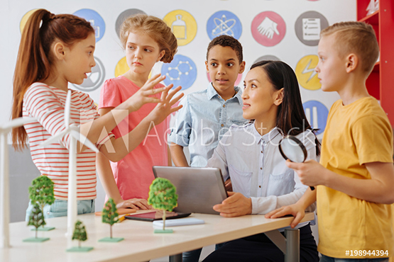

Toddler
Toddlers use their bodies, senses, and emerging problem-solving skills to learn about their world.
LEARN MOREAt the elementary level (ages 6 to 12), students developmentally shift from building their personality and understanding the concrete world around them to finding their place in the world and understanding why things are the way they are. Their growing power to reason and their imagination become the fuel for their learning. Their social need to be with others drives their desire to work together and to work in groups that have leaders, rules, and a sense of moral order. Not only are they learning significant academic content at this age, but they are learning so much about what is right and wrong, fair and unfair. Check admissions for tuition and other details.
In the lower elementary years (ages 6 to 9), students work with the carefully designed Montessori materials to understand concepts. As they move into their upper elementary years (ages 9 to 12), students are can able to understand concepts that are more abstract and depend less on the materials to build their understanding of new topics. They are more able to work on complex projects and research to expand, demonstrate, and share their knowledge.
Our social curriculum focuses on supporting students in learning how to care and manage conflicts with others and appreciating differences as well as have the opportunity to practice and shape in the elementary years are ones that strongly influence their success as adults: independence, emotional intelligence, a love of learning, viewing mistakes and “failures” as opportunities to learn and grow, perseverance, and confidence in their abilities and ideas.
Elementary students enjoy weekly classes in art, music, and physical education. These classes are taught by teachers who specialize in those areas. The art curriculum focuses on appreciating each student’s abilities and exploring with form. Our music curriculum includes experiencing their music, reading music, and using the voice. Older students (9 to 12-year-olds) begin some instrument work. The physical education curriculum is a favorite where students enjoy unique games and activities that help them learn good sportsmanship and teamwork.
We want the children to be comfortable navigating the world, not just our classroom. The children must ‘go out’ beyond the limits of the classroom to find the information or resource that they need. A ‘Going Out’ is a planned undertaking by teachers and students. They find a resource in the community and prepare themselves for the experience. Each Going Out is an entire course of study on independence, responsibility, and good citizenship — to say nothing of the intellectual rewards that children get from going on such an experience.
Toddlers use their bodies, senses, and emerging problem-solving skills to learn about their world.
LEARN MORETangible academic experiences and practical life exercises engage children in learning, in a mixed-age classroom.
LEARN MOREWe’d love to hear from you. Choose the most convenient method and we’ll get back to you as soon as we can.
Contact us